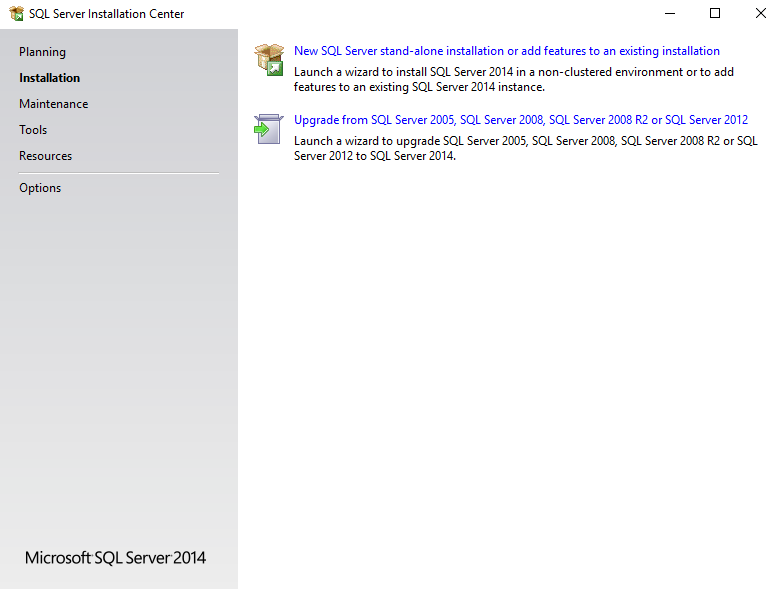
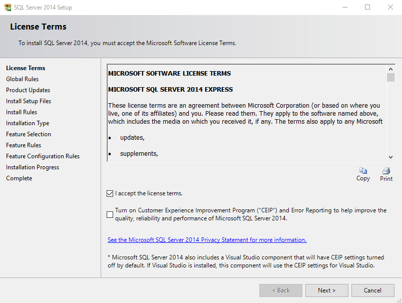
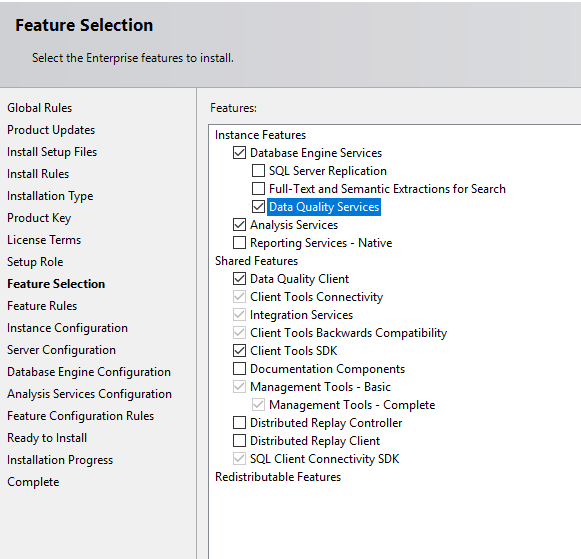
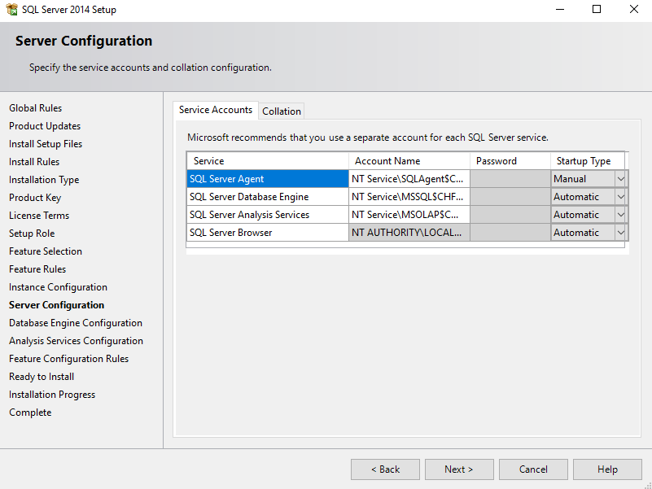
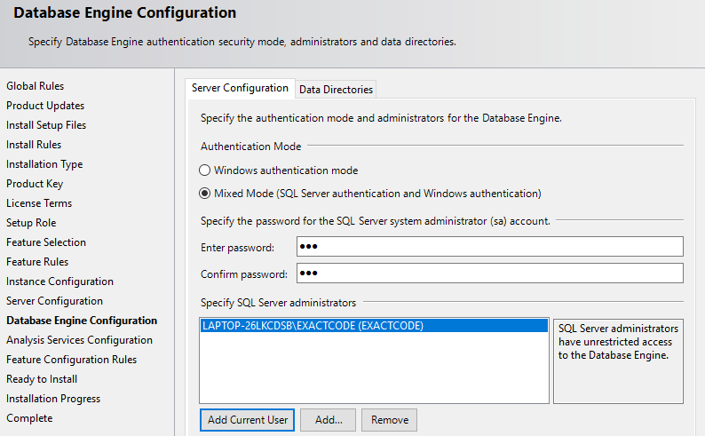

Install SQL Server¶
Note: This installation guide is based on SQL Server 2017.
Download the desired version of SQL Server (for example, the Standard version from https://www.microsoft.com/en-us/sql-server/sql-server-downloads). the Express version cannot be used because it lacks the data warehouse function used by AR IMIS
Select the manual configuration option in order to fine tune the installation process.
SQL Server installation home page¶
Click ‘New SQL Server stand-alone new installation or add feature to an existing installation’ (SQL Server installation home page)
Image - SQL Server installation home page
License Terms¶
Accept license terms, after read and submit to your lawyer for verification, click Next
Setup Role¶
Choose the first selection which does new installation of features (SQL Role page)
Image - SQL Role page
Features selection¶
Select feature, that will give the capability to work with normal Database engine along SQL Server Data Tools (Analysis, Integration, Reporting services) (SQL features page)
Image - SQL features page
Instance Configuration¶
Choose named instance, to enable working on custom feature, the default name will be SQLSERVER
Server Configuration¶
Configure service upon computer startup. Change SQL Server Agent to Automatic (SQL Configuration page)
Image - SQL Configuration page
Database Configuration¶
Authentication mode choose Mixed mode, where you will have two selection when login into the server, type the password and click ‘Add Current user’ button to add local administrator account of a computer, ‘Add’ mean you add activate directory user account (locally or connected) (SQL Engine Configuration page)
Image - SQL Engine Configuration page
Analysis Services Configuration¶
Server Mode choose ‘Multidimensional and Data Mining Mode’ due to facts that;
Grant data access permissions¶
As previously noted, you will need to grant permissions on the Analysis Services instance. Each database object will have roles that provide a given level of permissions (read or read/write), and each role will have members consisting of Windows user identities. To set permissions, you can use SQL Server Management Studio. Under the Database → Roles folder, you can
- Create roles,
- Specify database permissions,
- Assign membership to Windows user or group accounts,
- Grant read or write permissions on specific objects.
Typically, Read permissions on a cube are sufficient for client connections that use, but do not update, model data. Role assignment varies depending on how you configured authentication.